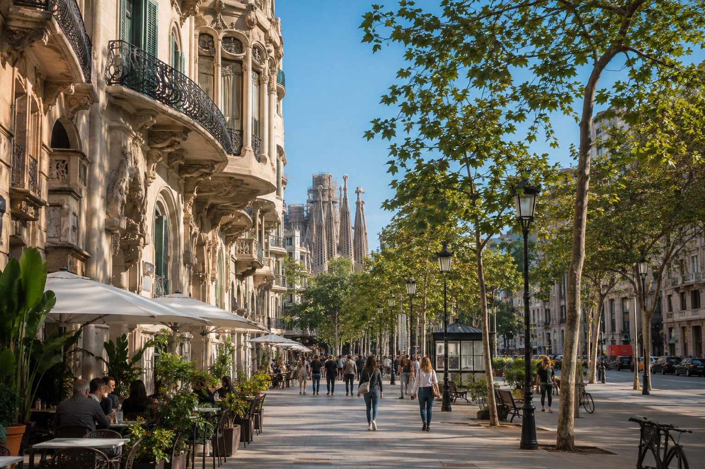
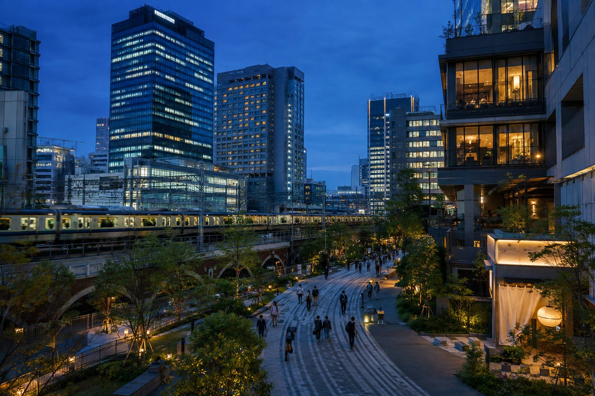
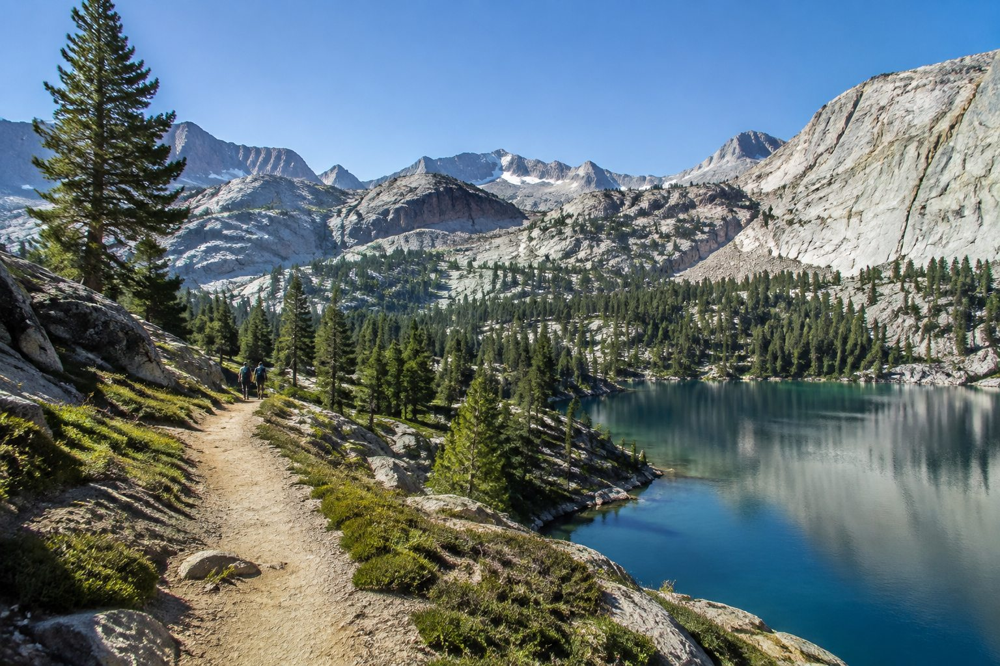
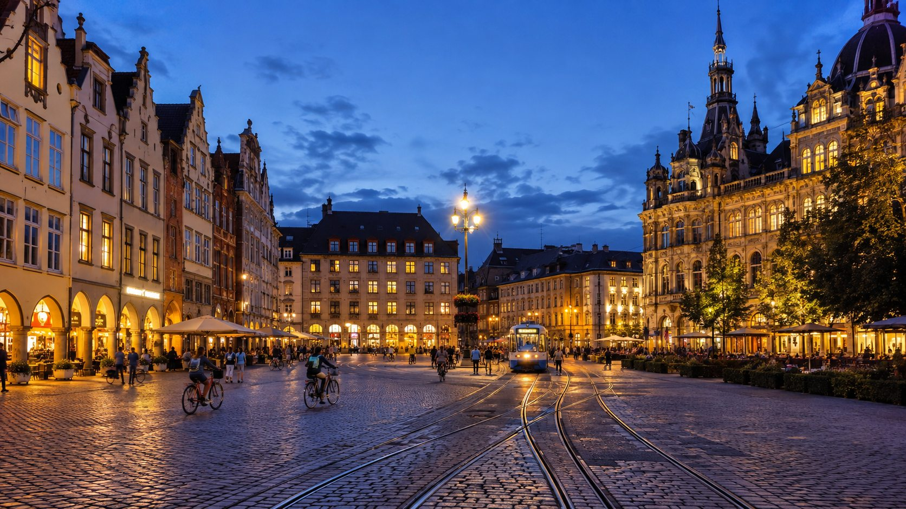

Travel Guides
Travel GuidesHow to Spend 3 Perfect Days in Paris
A balanced three-day Paris plan combining essential landmarks, neighborhood walks and relaxed meals.

Explore inspiring destinations, practical travel guides and ideas for your next adventure.
Explore Destinations →Travel GuidesA balanced three-day Paris plan combining essential landmarks, neighborhood walks and relaxed meals.

Travel GuidesA focused weekend route through Barcelona’s architecture, markets, beaches and evening neighborhoods.

Travel GuidesFive well-paced days covering Tokyo’s contrasts without turning the visit into a checklist.
Useful decisions that protect your budget while keeping the trip enjoyable.

 Road Trips & Outdoors
Road Trips & OutdoorsPlan distances, rest stops, fuel and overnight stays without scheduling every hour.

Road Trips & OutdoorsAccessible park ideas and practical planning advice for travelers new to national-park trips.
 Road Trips & Outdoors
Road Trips & OutdoorsA straightforward packing list for a safe, comfortable weekend outside without hauling unnecessary gear.

A varied shortlist of historic capitals, compact cultural hubs and waterside cities for future European journeys.
A straightforward packing list for a safe, comfortable weekend outside without hauling unnecessary gear.
Useful decisions that protect your budget while keeping the trip enjoyable.
A slower Bali itinerary built around fewer bases, restorative mornings and considerate local travel.

A four-day Rome plan that pairs major ancient sites with slower streets, markets and evening walks.

Simple steps for choosing a trail, checking conditions and carrying the essentials for a good first hike.